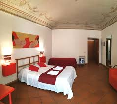

Il B&B Hotels - Hotel Le meraviglie della sicilia è un hotel 3 stelle che sorge nel cuore del centro storico della città di Palermo, nel quartiere della Loggia. Situato lungo Via Vittorio Emanuele, l'albergo si trova a pochi metri dai Quattro Canti e dalla chiesa di San Giuseppe. All’ultimo piano dell’edificio sono a disposizione di tutti gli ospiti un ristorante tipico siciliano e una splendida terrazza che offre un affaccio esclusivo sulla caratteristica Piazza Pretoria e sui tetti del centro storico di Palermo, dove poter cenare o concedersi un momento di relax avvolti da un’atmosfera suggestiva.
DA SAPERE: l'hotel si trova nel centro storico di Palermo all'interno di un'area ZTL il cui accesso con l'auto è consentito solo a pagamento, dal lunedì al sabato, al costo di 5€ al giorno. È possibile attivare gratuitamente in reception il pass giornaliero valido esclusivamente per i giorni di arrivo e di partenza.